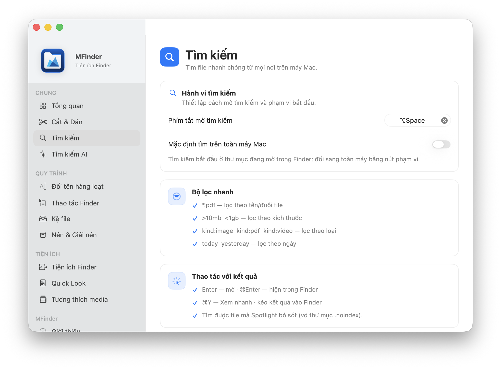

01
Tìm kiếm hợp nhất
Tìm trước khi nhớ ra tên file.
Nhấn ⌥Space, tìm theo tên, loại, thời gian hoặc ý nghĩa. Quick Look và kéo kết quả thẳng vào Finder.

Tìm đúng file, xử lý PDF và ảnh, xem nhanh archive, đổi tên hàng loạt cùng nhiều thao tác hữu ích — ngay tại nơi bạn đang làm việc.


Một app, nhiều việc nhỏ
MFinder giữ trải nghiệm macOS quen thuộc, chỉ thêm đúng công cụ vào đúng ngữ cảnh.
Tìm kiếm hợp nhất
Nhấn ⌥Space, tìm theo tên, loại, thời gian hoặc ý nghĩa. Quick Look và kéo kết quả thẳng vào Finder.

Finder Actions
Mở Terminal, copy path, tạo file, dọn file rác, đổi tên và xử lý hàng loạt mà không rời Finder.

PDF · Ảnh · Archive
Gộp, tách, xoay và OCR PDF; nén, resize, đổi định dạng ảnh; nén và giải nén nhiều định dạng phổ biến.
Quick Look mở rộng
Xem Markdown đẹp và duyệt nội dung archive mà không cần mở hoặc giải nén file.

Mua ngay trong MFinder
Không cần tạo tài khoản. MFinder tự nhận thanh toán, tạo license và mở khóa ngay khi giao dịch hoàn tất.
Tải DMG, cài đặt và dùng toàn bộ tính năng trước khi quyết định.
Nhập email nhận key. Giá luôn được cố định là 199.000đ.
Thanh toán bằng app ngân hàng, đúng số tiền và nội dung đã điền sẵn.
Key xuất hiện ngay trong app và được gửi qua email để bạn lưu lại.
License trọn đời
Bạn mua MFinder một lần và dùng vĩnh viễn trên hai máy Mac. Không subscription, không tự gia hạn.
Thanh toán một lần
Cần biết trước khi mua
Nếu vẫn cần hỗ trợ, hãy hỏi trong cộng đồng MacLife.
Mở cộng đồng MacLife ↗Không. Email chỉ dùng để giao key, khôi phục license và gửi chứng từ liên quan đến giao dịch.
Không. Sau lần kích hoạt đầu tiên, license trả phí hoạt động offline vô thời hạn. Khi có mạng, MFinder kiểm tra trạng thái định kỳ nhưng lỗi mạng không khóa app.
Deactivate máy cũ trong phần License & Purchase rồi nhập lại key trên máy mới. Mỗi key có tối đa hai máy đang hoạt động.
Không. Gift key có đầy đủ quyền lợi và giới hạn hai máy giống license mua trực tiếp.
Gửi yêu cầu trong vòng 7 ngày từ lúc thanh toán. Hoàn tiền được xử lý thủ công; license sẽ ngừng hoạt động sau khi hoàn tiền được xác nhận.
File và nội dung của bạn được xử lý tại máy. Email chỉ phục vụ giao key, khôi phục và chứng từ; không dùng để tạo tài khoản.
Mỗi license dành cho một người dùng, được kích hoạt trên tối đa hai máy Mac và không được bán lại hoặc chia sẻ công khai.
Yêu cầu hợp lệ được xử lý thủ công trong 7 ngày đầu. License được vô hiệu hóa khi khoản hoàn trả hoàn tất.